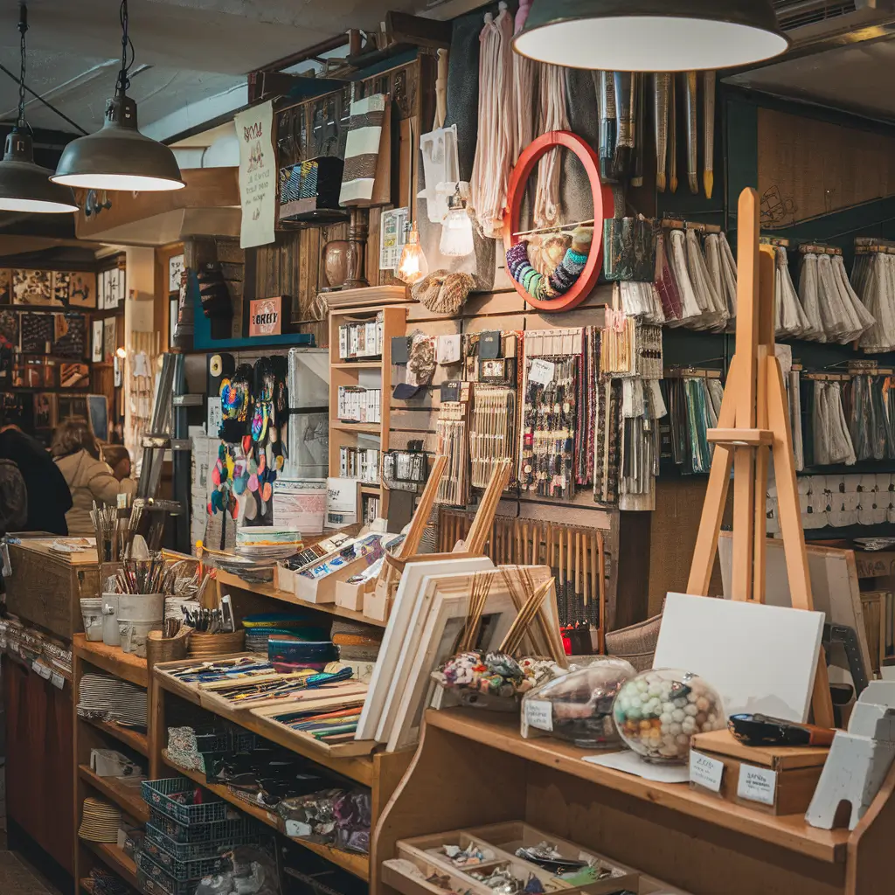

Unleash Your Creativity with DIYDen
Welcome to DIYDen, your ultimate destination for crafting, painting, and bringing ideas to life. Whether you're a beginner or a seasoned artist, we have everything you need to turn imagination into reality. Explore our curated selection and start creating today!
From our expertly crafted DIY kits to our handpicked selection of paints, brushes, and canvases, we provide the materials and guidance you need to unleash your creativity. Whether you're looking to create a one-of-a-kind gift, decorate your home, or simply express yourself, DIYDen is the perfect place to start.

Creative Tools You Can Trust
At DIYDen, we provide high-quality materials and expert guidance to help you craft with confidence. Find the perfect tools to make every project a masterpiece!
Passion Meets Possibility
Everything You Need to Create
Start Your Creative Journey Today
Join a community of makers, dreamers, and innovators who share your passion for crafting and creativity.
A World of Inspiration Awaits
Find the motivation to start something new. With our diverse selection and expert resources, you’ll never run out of ideas or support! From step-by-step guides to inspiring stories, we're here to help you grow as a creative. Join our community today and discover the incredible things you can do!
Quality and Innovation First
We bring you the best materials so you can create with ease. Every product is chosen with care, ensuring your projects turn out just the way you envision. From high-quality paints and brushes to unique DIY kits and expert guidance, we have everything you need to unlock your potential. Whether you're looking to create a one-of-a-kind gift, decorate your home, or simply express yourself, DIYDen is the perfect place to start.
DIYDen: Your Creative Haven
Step into a space where ideas come to life. With DIYDen, your creativity knows no bounds!
Discover the DIYDen Experience
Find everything from paints and brushes to crafting kits and tools—designed to fuel your passion for making. From intricate DIY projects to one-of-a-kind gifts, our selection of materials and expert guidance will help you bring your vision to life.
Join Our Creative Community
Sign up to get exclusive DIY guides, special offers, and invitations to inspiring workshops. Plus, receive helpful tips, inspiring stories, and resources to fuel your creativity.
Claim Your Free DIY Guide
Choose a project and get step-by-step instructions to bring your creative vision to life. With our comprehensive guides, you'll discover new techniques, tips, and tricks to elevate your skills.
Start Crafting Now
Embrace your artistic side with DIYDen. Every creation starts with a single step—let’s begin! Dive into a world of creativity where your imagination is the only limit. Whether you're a novice or a seasoned crafter, our community and resources are here to support and inspire you every day.
Inspiration Every Day
With DIYDen, your creativity is limitless. Our tools and materials are designed to help you bring every idea to life. Whether you're a seasoned crafter or a curious beginner, we provide the resources you need to grow your skills and express yourself in new and exciting ways. Discover a wide array of projects that challenge your imagination and help you explore different techniques.
We’re here to fuel your passion for making. From expert tips to high-quality supplies, DIYDen is your partner in every creative journey. Our community is dedicated to inspiring and supporting each other, so you can share your creations, get feedback, and connect with like-minded people who understand your artistic vision. Join us to learn, create, and innovate, while turning your ideas into reality with our endless inspiration and guidance.
What Our Customers Say
Real stories from creative minds who’ve brought their ideas to life with DIYDen.
Emily R.
‘DIYDen has completely transformed my crafting experience! The quality of their supplies is unmatched.’
Michael S.
‘I never thought I could create such amazing projects until I discovered DIYDen. Their kits make everything so easy!’
Sarah T.
‘DIYDen helped me rediscover my passion for painting. Their selection of colors is incredible!’
David L.
‘As a beginner, I was intimidated to start, but DIYDen made it so simple. Now I’m crafting every weekend!’
Rachel W.
‘I love the variety of supplies at DIYDen. Everything I need for my projects is in one place.’
James K.
‘From woodworking to painting, DIYDen has everything. I wouldn’t shop anywhere else for my DIY needs.’
Olivia M.
‘The DIY guides are so helpful! I’ve learned new skills and gained confidence in my abilities.’
Liam J.
‘DIYDen is more than a store—it’s a creative community. I’ve connected with other makers and found endless inspiration.’
How It Works
Unleash your creativity with DIYDen! Find the tools, materials, and inspiration to turn your ideas into reality. Our platform is designed to fuel your passion for making, with expert guidance, premium supplies, and a supportive community of like-minded creatives. Whether you're a seasoned crafter or just starting out, DIYDen is the perfect place to express yourself and bring your imagination to life.
Set Your Creative Vision
Every masterpiece starts with an idea. Let's bring yours to life! Whether you're looking to create a gift, decorate your home, or simply express yourself, DIYDen is the perfect place to start.
Gather Your Materials
From paints to fabrics, DIYDen has everything you need to fuel your passion. We curate high-quality materials to ensure that your creative vision is brought to life with precision and style. Whether you're a seasoned crafter or just starting out, DIYDen's got you covered.
Create with Confidence
Express yourself boldly with high-quality supplies designed for makers like you. DIYDen is the perfect place to bring your vision to life and unlock your potential. Whether you're a seasoned crafter or just starting out, our expert guidance and curated materials will help you create with confidence.
Showcase Your Work
Celebrate every creation—your art deserves to be seen and admired! Whether it's a family heirloom, a thoughtful gift, or simply a reflection of your imagination, DIYDen is the perfect platform to share your work with the world.